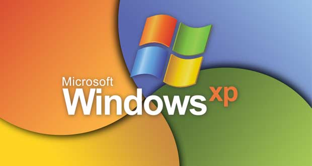

Introduction
Cette exploration informatique offre un aperçu diversifié des systèmes d'exploitation et des plateformes qui façonnent le paysage technologique contemporain. De Windows XP et Windows 7 à l'évolution vers Windows 10 et Windows 11, en passant par un éventail de distributions Linux, notamment Ubuntu, Fedora, Arch, Linux Mint, et même Android TV, cette vue d'ensemble reflète la richesse des choix disponibles. De plus, des solutions spécialisées, telles que Raspberry Pi, Proxmox, TrueNAS, et des systèmes orientés sécurité comme Parrot OS, ajoutent des dimensions spécifiques aux besoins des utilisateurs. Rajoutons également Macos, le système d'exploitation d'Apple, pour compléter cette diversité. Plongeons dans cet écosystème pour mieux comprendre les caractéristiques distinctives de chaque élément.
Systèmes d'exploitation Windows
Windows XP et un ancien favori, souvent salué pour sa stabilité.
Windows 7 est célèbre pour son interface conviviale, largement utilisé malgré son obsolescence.
Windows 10 et la dernière itération de la série Windows, offrant des fonctionnalités modernes et une sécurité renforcée.
Windows 11 et la dernière évolution de l'écosystème Windows, apportant des améliorations visuelles et fonctionnelles.
Distributions Linux
Macos est d'un système d'exploitation d'Apple, connu pour son design élégant et son intégration transparente avec les produits Apple.
Ubuntu et une distribution conviviale, idéale pour les débutants.
Fedora est reconnu pour ses fonctionnalités avant-gardistes et sa communauté active.
Arch est apprécié pour sa simplicité et sa personnalisation approfondie.
Linux Mint est axé sur l'expérience utilisateur avec un design attrayant.
Raspberry Pi et d'une carte informatique polyvalente pour des projets DIY.
Proxmox c'est d'une plateforme de virtualisation open-source.
TrueNAS et un système de stockage de données open-source puissant.
OPNsense et Pfsense c'est d'un pare-feu open-source adaptés à la sécurité réseau.
Parrot OS c'est d'une distribution Linux axée sur la sécurité.
Android TV c'est d'une version spécialisée de Linux adaptée aux besoins des téléviseurs intelligents, ajoutant une dimension multimédia à l'écosystème Linux.
Conclusion
De la transition des systèmes d'exploitation Windows aux différentes distributions Linux, en passant par les solutions spécialisées, cet aperçu souligne la diversité dynamique de l'écosystème informatique. Chaque choix offre des fonctionnalités spécifiques répondant aux besoins variés des utilisateurs, contribuant ainsi à la complexité et à la richesse du paysage technologique contemporain.